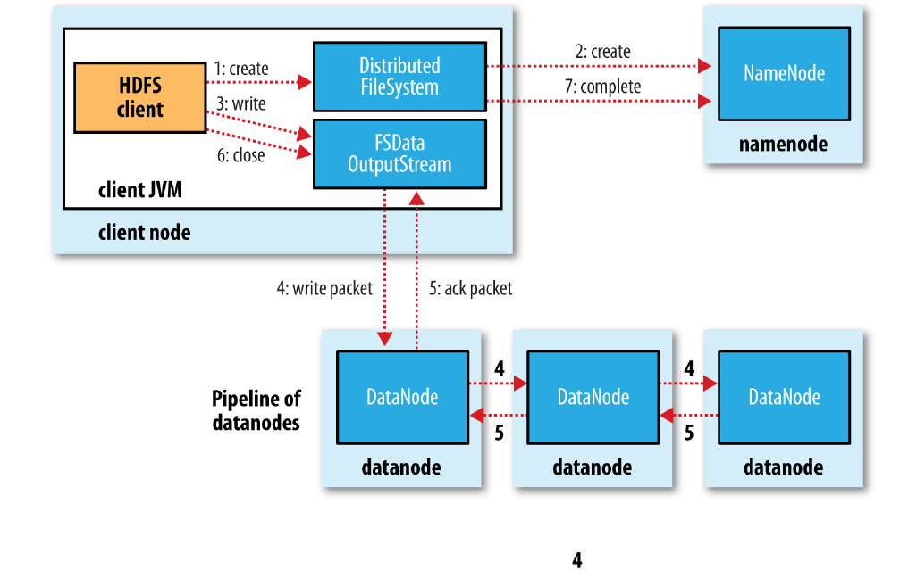

HDFS写文件源码分析
Table of Contents
最近参加的面试，一面问了HDFS写文件流程，完了之后把《Hadoop权威指南》上的流程配合源码简单的看了一遍。二面又问到了这个问题，一些细节还是漏了，对这部分还是专门记个笔记吧。稍微梳理了一下，发现感觉这个问题确实太适合作为面试题了，有细节还适合引申到其它的点。
写数据流程
大体流程如图（来自《Hadoop权威指南》）

- 客户端通过DistributedFileSystem的create()创建文件，中间会对namenode创建RPC调用（namenode.create)，namenode在检查权限等问题后新建文件。
- 创建完文件后会返回FSDataOutputStream，在DFSOutputStream上的一层包装，用于处理写入数据所需要的namenode和datanode之间的通信。
- 在数据写入过程中，DFSOutputStream会将数据划分为packets，并放入data queue，由DataStreamer处理（向namenode申请分配新的block）。
- 被选择的datanode连起来构成pipeline，DataStreamer流式的将packets发送到第一个datanode，第一个datanode每次收到packet后存储并转发到pipeline上下一个datanode。
- DFSOutputStream还维护了一个ack queue，当所有的datanode都应答后对应的packet会被移除。
源码分析
以下代码来自Hadoop 2.7.7。
FileSystem.get()通过URI返回对应的DistributedFileSystem，调用create函数在namenode上创建文件，返回输出流。
Configuration conf = new Configuration();
FileSystem hdfs = FileSystem.get(URI.create(hdfsDirectory), conf);
FSDataOutputStream outputStream = hdfs.create(new Path(hdfsDirectory));
outputStream.writeInt(1);
outputStream.close();
DistributedFileSystem的create()中，通过DFSClient的对象dfs，调用dfs.create()。中间使用了FileSystemLinkResolver类，当doCall函数中抛出UnresolvedLinkException时（解析Path路径失败），会重新解析路径得到合适的FileSystem和Path传入next()。总体上相当于给定的路径解析失败时，重新解析后再次调用create函数。创建完成后对返回的DFSOutputStream外套了一层FSDataOutputStream用于写结果。
final DFSOutputStream out = dfs.create(getPathName(f), permission,
overwrite ? EnumSet.of(CreateFlag.CREATE, CreateFlag.OVERWRITE)
: EnumSet.of(CreateFlag.CREATE),
true, replication, blockSize, progress, bufferSize, null,
favoredNodes);
return dfs.createWrappedOutputStream(out, statistics);
dfs.create() 调用了DFSOutputStream.newStreamForCreate(…)。
public DFSOutputStream create(String src,
//...
InetSocketAddress[] favoredNodes) throws IOException {
//...
final DFSOutputStream result = DFSOutputStream.newStreamForCreate(this,
src, masked, flag, createParent, replication, blockSize, progress,
buffersize, dfsClientConf.createChecksum(checksumOpt),
getFavoredNodesStr(favoredNodes));
// ...
return result;
}
DFSOutputStream.newStreamForCreate(…)。首先通过RPC到namenode上调用create函数(dfsClient.namenode.create)，然后new DFSOutputStream并启动。此时，文件在namenode上的创建完成，可以开始写入。
static DFSOutputStream newStreamForCreate(DFSClient dfsClient, String src,
FsPermission masked, EnumSet<CreateFlag> flag, boolean createParent,
short replication, long blockSize, Progressable progress, int buffersize,
DataChecksum checksum, String[] favoredNodes) throws IOException {
// ...
stat = dfsClient.namenode.create(src, masked, dfsClient.clientName,
new EnumSetWritable<CreateFlag>(flag), createParent, replication,
blockSize, SUPPORTED_CRYPTO_VERSIONS);
// ...
}
// ...
final DFSOutputStream out = new DFSOutputStream(dfsClient, src, stat,
flag, progress, checksum, favoredNodes);
out.start();
return out;
}
有了DFSOutputStream后的代码不能直接跳，DFSOutputStream的写数据会进入类中覆盖的writeChunk()，在writeChunkImpl()中实现具体的逻辑。主要过程为：当currentPacket为空时，创建一个新的DFSPacket，然后写入checkSum、data等信息，在DFSPacket里的chunk数量或者大小达到一定值时，会将当前的DFSPacket放入dataQueue队列中。
@Override
protected synchronized void writeChunk(byte[] b, int offset, int len,
byte[] checksum, int ckoff, int cklen) throws IOException {
TraceScope scope =
dfsClient.getPathTraceScope("DFSOutputStream#writeChunk", src);
try {
writeChunkImpl(b, offset, len, checksum, ckoff, cklen);
} finally {
scope.close();
}
}
private synchronized void writeChunkImpl(byte[] b, int offset, int len,
byte[] checksum, int ckoff, int cklen) throws IOException {
//...
if (currentPacket == null) {
currentPacket = createPacket(packetSize, chunksPerPacket,
bytesCurBlock, currentSeqno++, false);
}
//...
currentPacket.writeChecksum(checksum, ckoff, cklen);
currentPacket.writeData(b, offset, len);
currentPacket.incNumChunks();
bytesCurBlock += len;
// If packet is full, enqueue it for transmission
//
if (currentPacket.getNumChunks() == currentPacket.getMaxChunks() ||
bytesCurBlock == blockSize) {
//...
waitAndQueueCurrentPacket();
adjustChunkBoundary();
// if encountering a block boundary, send an empty packet to
// indicate the end of block and reset bytesCurBlock.
//
if (bytesCurBlock == blockSize) {
currentPacket = createPacket(0, 0, bytesCurBlock, currentSeqno++, true);
currentPacket.setSyncBlock(shouldSyncBlock);
waitAndQueueCurrentPacket();
bytesCurBlock = 0;
lastFlushOffset = 0;
}
}
}
DFSOutputStream并没有直接在writeChunk()中将数据写入datanode，而是创建了DFSPacket写入到dataQueue中。DataStreamer在另外的一个线程将dataQueue中的数据写入到datanode。
DataStreamer的写入流程，主要在其线程函数run()中。这个地方在《Hadoop权威指南》里没有特别的提，代码流程主要如下：
- 等待当前packet发送完毕后，从dataQueue中取一个新的packet；
- 如果当前stage状态为PIPLINE_SETUP_CREATE 2.1 rpc到namenode添加新的block，向pipline中第一个datanode建立socket连接，构建输出流并发送WRITE_BLOCK指令； 2.2 启动新的ResposeProcesser，并将当前的stage状态改为PIPLINE_STREAMING;
- 判断当前的packet是否为当前block中的最后一个packet，如果是则将stage状态改为PIPLINE_CLOSE；
- 将当前的packet从dataQueue中移除，并放入ackQueue，向输出流中写入packet；
- 如果是当前block的最后一个packet，则结束当前的输出流（关闭response、关闭输出流、删除pipline信息、设置状态为PIPLINE_SETUP_CREATE）。
DFSClient与datanode的通信（写数据）并非用的RPC，而是直接用NetUtils.createSocketAddr()连接到datanode，然后向datanode发送Op.WRITE_BLOCK指令告诉datanode执行写block的命令。
ResponseProcessor在单独的线程中处理datanode回复的ack（每个block会新建一个ResponseProcessor，对应一个新线程），当成功的收到datanode的ack时，会将ackQueue中对应的packet移除。
//
// The DataStreamer class is responsible for sending data packets to the
// datanodes in the pipeline. It retrieves a new blockid and block locations
// from the namenode, and starts streaming packets to the pipeline of
// Datanodes. Every packet has a sequence number associated with
// it. When all the packets for a block are sent out and acks for each
// if them are received, the DataStreamer closes the current block.
//
class DataStreamer extends Daemon {
//...
/*
* streamer thread is the only thread that opens streams to datanode,
* and closes them. Any error recovery is also done by this thread.
*/
@Override
public void run() {
// ...
DFSPacket one;
try {
// ...
synchronized (dataQueue) {
// wait for a packet to be sent.
if (dataQueue.isEmpty()) {
one = createHeartbeatPacket();
assert one != null;
} else {
one = dataQueue.getFirst(); // regular data packet
}
}
// get new block from namenode.
if (stage == BlockConstructionStage.PIPELINE_SETUP_CREATE) {
setPipeline(nextBlockOutputStream());
// nextBlockOutputStream 中会调用namenode的rpc添加新的block
// 然后建立与pipline中第一个Datanode的socket连接，并写入指令告诉Datanode进入block写模式
initDataStreaming(); // 启动ResposeProcesser对应的线程，并将当前的状态改为PIPELINE_STREAMING
} else if (stage == BlockConstructionStage.PIPELINE_SETUP_APPEND) {
// 对block的append模式
setupPipelineForAppendOrRecovery(); // 此过程会调用namenode的RPC更新block
// LocatedBlock lb = dfsClient.namenode.
// updateBlockForPipeline(block.getCurrentBlock(), dfsClient.clientName);
initDataStreaming();
}
long lastByteOffsetInBlock = one.getLastByteOffsetBlock();
if (lastByteOffsetInBlock > blockSize) {
throw new IOException("BlockSize " + blockSize +
" is smaller than data size. " +
" Offset of packet in block " +
lastByteOffsetInBlock +
" Aborting file " + src);
}
// 当前packet(one)是block中的最后一个packet时
if (one.isLastPacketInBlock()) {
// wait for all data packets have been successfully acked
synchronized (dataQueue) {
while (!streamerClosed && !hasError &&
ackQueue.size() != 0 && dfsClient.clientRunning) {
try {
// wait for acks to arrive from datanodes
dataQueue.wait(1000);
} catch (InterruptedException e) {
DFSClient.LOG.warn("Caught exception ", e);
}
}
}
if (streamerClosed || hasError || !dfsClient.clientRunning) {
continue;
}
stage = BlockConstructionStage.PIPELINE_CLOSE;
}
Span span = null;
synchronized (dataQueue) {
// move packet from dataQueue to ackQueue
if (!one.isHeartbeatPacket()) {
span = scope.detach();
one.setTraceSpan(span);
dataQueue.removeFirst();
ackQueue.addLast(one);
dataQueue.notifyAll();
}
}
// 这里才到了向第一个数据节点写数据的地方
// write out data to remote datanode
TraceScope writeScope = Trace.startSpan("writeTo", span);
try {
one.writeTo(blockStream);
blockStream.flush();
} catch (IOException e) {
// HDFS-3398 treat primary DN is down since client is unable to
// write to primary DN. If a failed or restarting node has already
// been recorded by the responder, the following call will have no
// effect. Pipeline recovery can handle only one node error at a
// time. If the primary node fails again during the recovery, it
// will be taken out then.
tryMarkPrimaryDatanodeFailed();
throw e;
} finally {
writeScope.close();
}
lastPacket = Time.monotonicNow();
// update bytesSent
long tmpBytesSent = one.getLastByteOffsetBlock();
if (bytesSent < tmpBytesSent) {
bytesSent = tmpBytesSent;
}
if (streamerClosed || hasError || !dfsClient.clientRunning) {
continue;
}
// 当最后一个packet写完后结束当前的block写过程
if (one.isLastPacketInBlock()) {
// wait for the close packet has been acked
synchronized (dataQueue) {
while (!streamerClosed && !hasError &&
ackQueue.size() != 0 && dfsClient.clientRunning) {
dataQueue.wait(1000);// wait for acks to arrive from datanodes
}
}
if (streamerClosed || hasError || !dfsClient.clientRunning) {
continue;
}
endBlock();
}
if (progress != null) { progress.progress(); }
// This is used by unit test to trigger race conditions.
if (artificialSlowdown != 0 && dfsClient.clientRunning) {
Thread.sleep(artificialSlowdown);
}
}
private class ResponseProcessor extends Daemon {
}
写数据失败的处理
当datanode写入数据失败。pipeline会被关闭，ack queue中的所有packet会被添加到data queue的头部，未发生故障的datanode会将当前的block标记后发送给namenode，使namenode能够正确的删除发生故障的datanode上未完成的block。发生问题的datanode会从pipeline中移除，然后由剩下的datanode完成pipeline的数据传输。namenode在发现replica的数量不够时，会选择新的节点放置block。
可能会存在多个datanode同时失败的情况，但在写入过程中，只要有dfs.namenode.replication.min个副本写入到结果中就会被认为写入成功。其它的block会在集群中异步的复制直到达到要求的副本数。
写文件需要注意Hadoop对写可能存在失败，hflush hsync能够以更高开销为代价保证数据的安全。
一致性模型
A coherency model for a filesystem describes the data visibility of reads and writes for a file.
为了保证效率，HDFS的一致性并不满足组POSIX。主要表现在下面几个方面。
文件在创建后，对于文件系统是可见的，如下：
Path p = new Path("p");
fs.create(p);
assertThat(fs.exists(p), is(true));
但是，文件的写入不一定是可见的，如下面的代码，即使已经flush到了文件，在马上获取文件内容时，得到的结果还是会为0。
Path p = new Path("p");
OutputStream out = fs.create(p);
out.write("content".getBytes("UTF-8"));
out.flush();
assertThat(fs.getFileStatus(p).getLen(), is(0L));
在超过一个block写完后，第一个block会变为可见。
HDFS提供了一种机制强制写入，将上面的out.flush()换成out.hflush()时，HDFS会确定数据已经送到了所有datanode，此时所有数据会对Reader可见。调用close()时会调用hflush。
但是，hflush并不保证数据被写入到磁盘，而只是保证数据在datanode的内存中，要想有更强的保证，需要使用hsync()。
从安全性上看，没有调用hflush()和hsync()时，某些客户端或者系统的错误会导致数据的丢失。因此，这两个函数的调用与否，是在数据安全和吞吐量两方面的tradeoff。